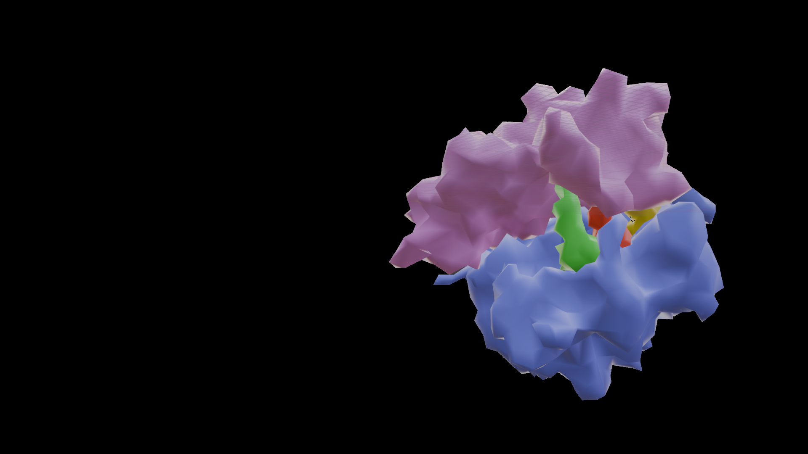
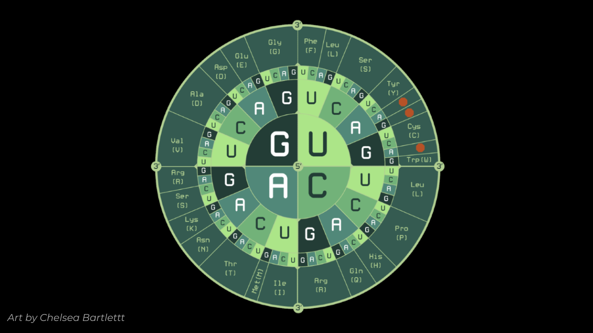
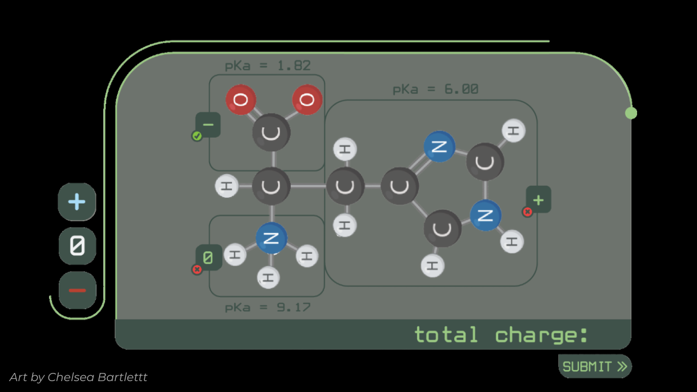

Interactive Science Learning
Emergence
First-person 3D educational game designed to make abstract biochemistry concepts more interactive, visual, and accessible.
Overview
Emergence is a first-person educational game that explores abstract biochemistry concepts through immersive environments, interactive systems, and visual metaphor. Players step into the foreign world of a bacterial cell to explore the biological processes at work within it. The project aims to make complex scientific ideas more approachable through interaction and environmental storytelling.
My Contributions
Curriculum Alignment
Supported curriculum alignment with ASBMB frameworks and integration of biochemistry learning objectives into gameplay systems.
Prototyping & Level Design
Created activity prototypes and supported level design using Figma, Construct 3, and Unity
Scientific visualization
Aiding in communicating complex scientific concepts through UI design, biological modeling prototypes and interactive systems design.
Environmental design and Visual Direction
Contributed to ensuring visual consistency and scientific accuracy of in-game environments
Cross-Disciplinary Collaboration
Collaborated closely with artists, developers, educators, and writers throughout development.
Interactive Prototypes
Alongside development of the 3D game environment, I created several interactive prototypes using Figma and Construct 3 to explore gameplay systems, visual communication, and instructional interactions. While these prototypes were more visually polished than traditional rapid prototypes, they were intentionally developed as temporary educational tools that could be used independently while the larger 3D project was still in development.
These prototype experiences also helped establish interaction patterns, activity structures, and visual approaches that later informed development of the full 3D version of the project. Biorender, AI image generation, and Pixabay were used to source placeholder art assets for these prototypes.
Design Challenges
A major challenge was translating highly abstract biochemical concepts into interactive experiences that felt intuitive and visually meaningful. The project required balancing scientific accuracy with clear visual communication, while determining what level of detail would best support student learning and comprehension.




Reflection
This project deepened my interest in exploring visual representations of microscopic biological processes and the potential for interactive media to make obscure scientific concepts more tangible and engaging for learners.
This project was developed collaboratively with interdisciplinary teams of educators, developers, artists, and researchers. Artist Chelsea Bartlett can be found at chelseabartlett.com. Artist Douglas Wu can be found at douglaswu99.wixsite.com/douglaswuart.